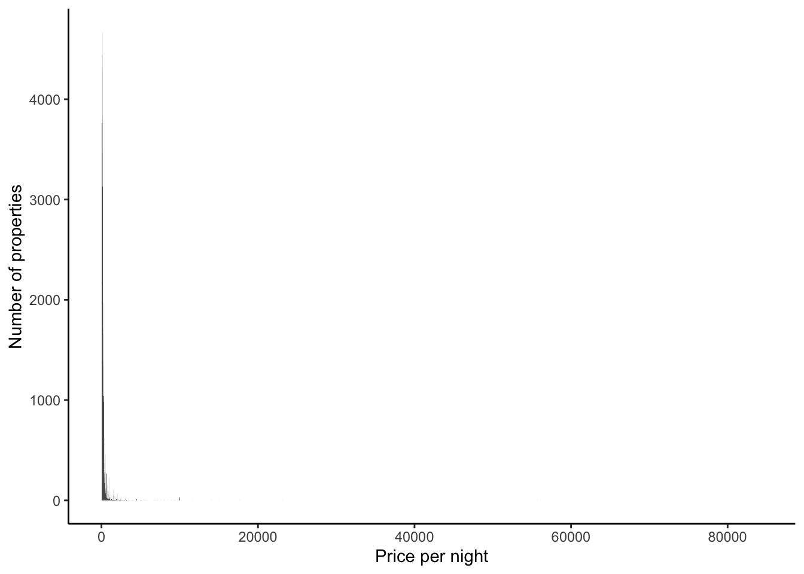
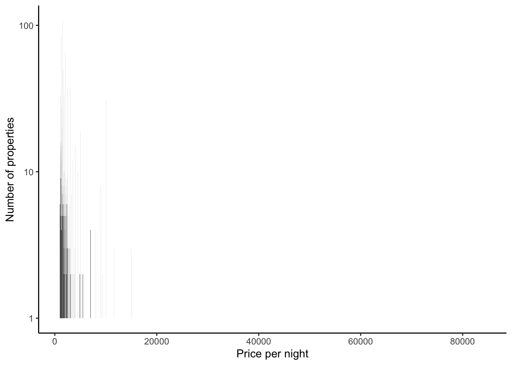
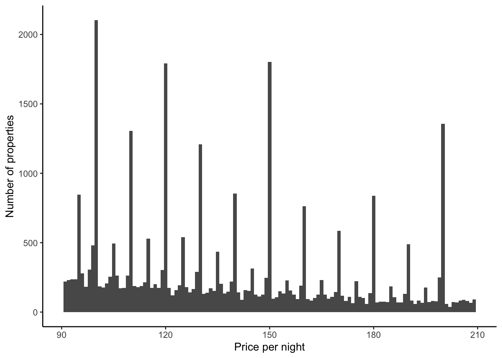
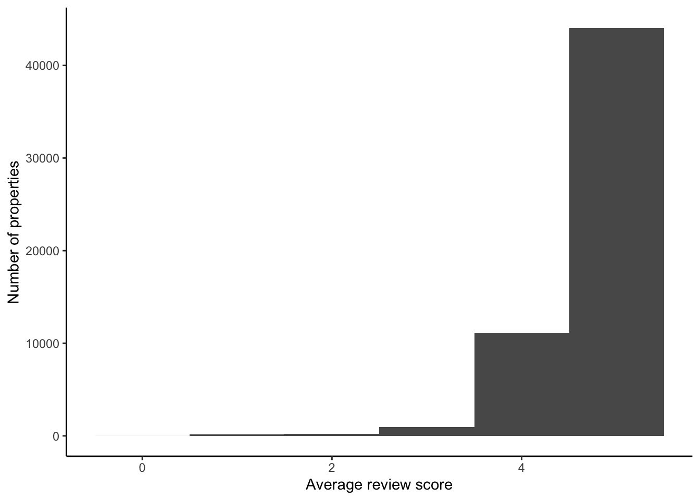
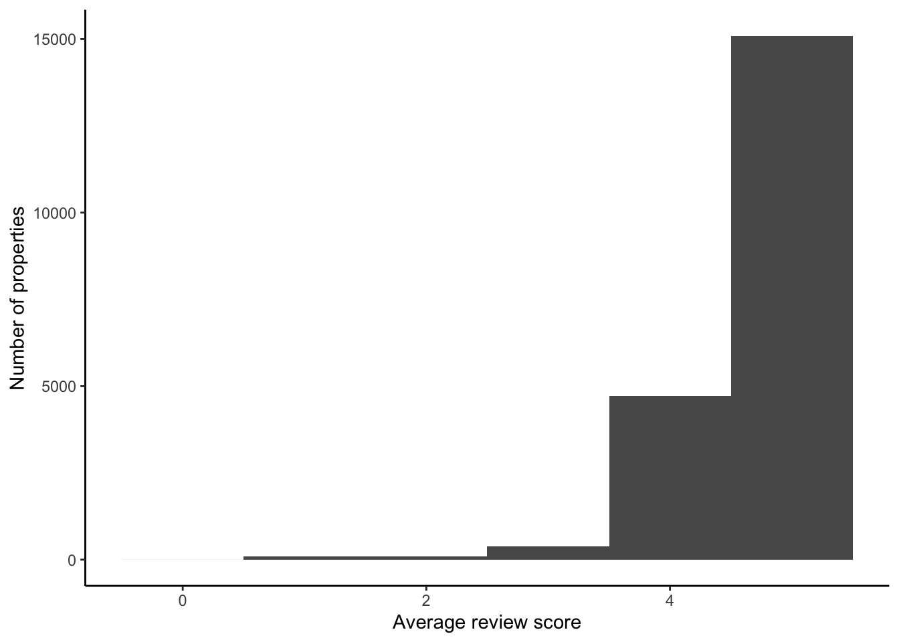
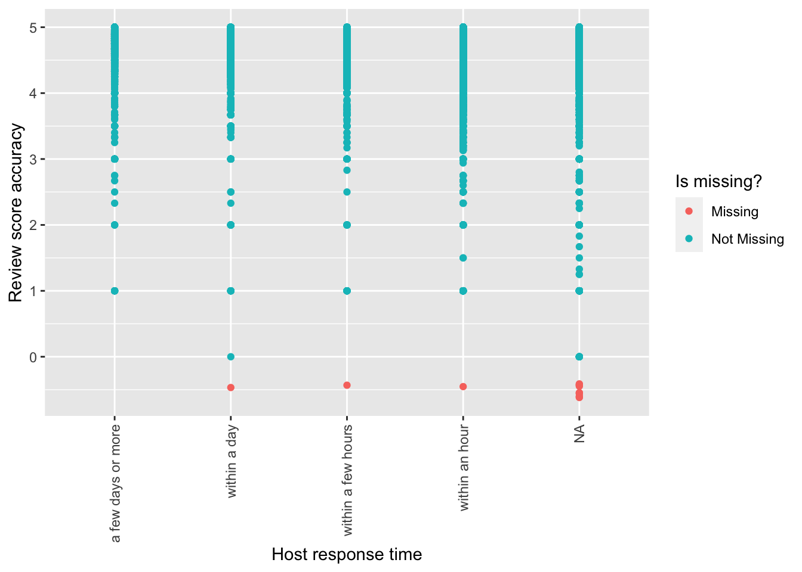
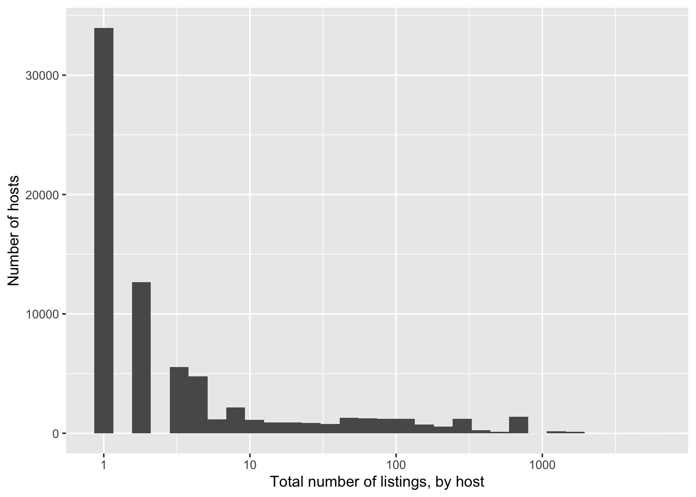
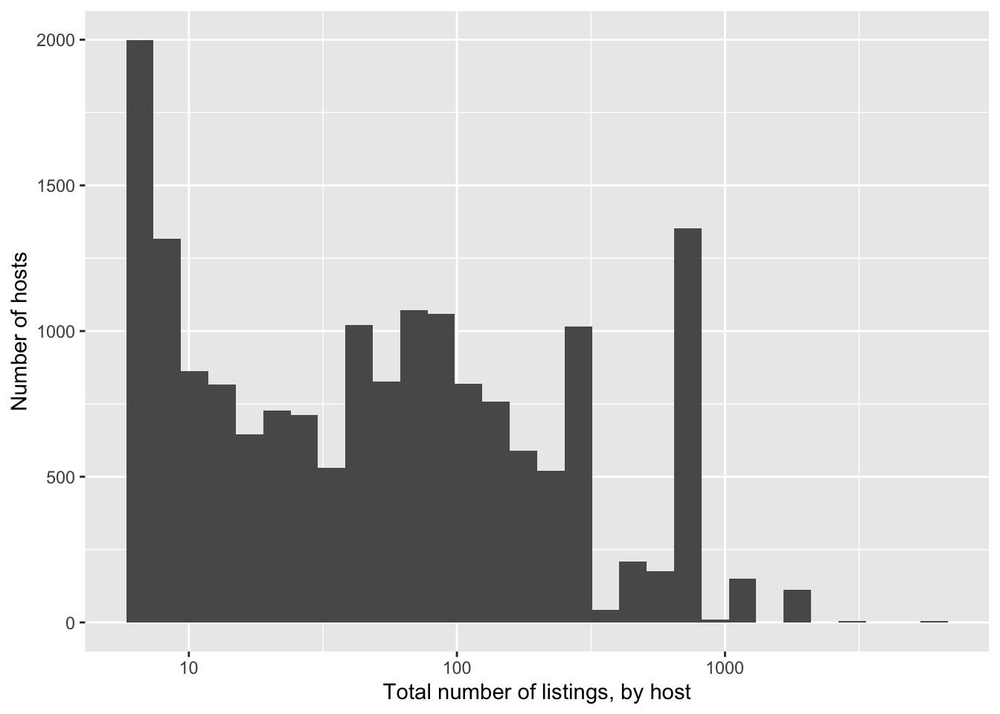
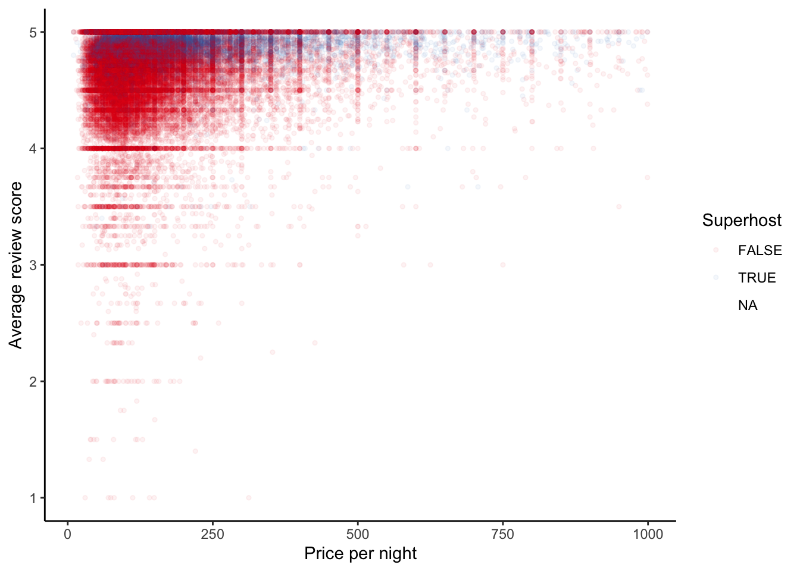

| Number of Dates Inputted as NA |
|---|
| 17891 |
Paris Airbnb EDA
Introduction
This is a Quarto document exploring information on the Airbnb’s in Paris, France. The code in this document uses R programming and uses considerable amounts of advice and code suggestions from the ‘Telling Stories With Data’ by Rohan Alexander.
Paris Airbnb EDA
First we need to download the data. We do this from http://insideairbnb.com/, “Data,” “Get the Data,” and scrolling down to Paris. I use the “Detailed Listings data” data set saved as a link.
First we notice the prices were incorrectly determined to be characters and turn them into numbers. Next, we can examine the distribution of the price.




As we can the distribution of prices, Figure 1, is similar to what we would expect of this type of data set. We can see over all the entries, a very large portion of the prices are below $1000 with some outliers going up to around $80000. As we look closer the distribution of prices, below $1000 in Figure 2, they fall into a normally, right-skewed distribution. Further, the prices display a peak around the prices ending in zero and five. This is representative of normal grouping of prices based in order to attract customers.
Now we will look at the date range and see how many rows have a value.
This data set spans over 14 years from first listed review in May of 2009 to the last listed review in December in 2023. Unfortunately, there is 17,891 Table 1 entries with NA for any variable of a date type, which is almost 25% of the entire data set.
Now we will examine the super host status. We can see there are 90 rows with a value of NA for reviews variables, whereas the rest are correctly inputted as Boolean values. This is almost nothing compared to the 74,329 entries. Further, we can add a column where instead of TRUE/FALSE we have 0/1.
Table 2: All Listings Where Superhost is Correctly Inputted
| host_id | host_is_superhost | host_is_superhost_binary |
|---|---|---|
| 3631 | FALSE | 0 |
| 7903 | FALSE | 0 |
| 439130 | FALSE | 0 |
| 2626 | TRUE | 1 |
| 22155 | FALSE | 0 |
| 429406 | FALSE | 0 |
Now we have only rows where there is information about super host status, Table 2.
In order to further examine the reviews for the listed Airbnb’s we will have to ignore those reviews with NA entries. Those rows with no entries in the first_review or last_review also have no entries for any review variables. This means to examine the reviews of the listings we would have to ignore close to 25% of the entries since they are listed as NA under any review variable.

Upon looking at those listings with reviews in Figure 3, a very large portion of the reviews fall into the high 4’s and 5.0 ratings.
We may be also interested in the relationship between being a super host and other factors. Perhaps response time plays a large role so we look at this closer. First we notice the more than 20,000 NAs are incorrectly inputted as N/A which R does not recognize.
Table 3: Count of the Different Response Time for All Entries
| host_response_time | n |
|---|---|
| a few days or more | 1269 |
| within a day | 5371 |
| within a few hours | 6909 |
| within an hour | 22538 |
| NA | 20362 |
Looking at Table 3, now every entry is of one of 5 desired factors, and NA is the correct type. Seeing that there is over 20,000 NAs for host_response time, we can look specifically at those reviews and see if they behave differently. Since the do have values for ratings, we can also look at their distribution as compared with other hosts with an inputted response time, Figure 4.


Next we can look at the number of properties a host with listed response times owns. In this case more than 30,000 hosts have only one listing, and keep in mind we lost almost 25% due to no reponse time Figure 5. There seems to be nothing wrong with the distribution of those with more than one listing.


Lastly, we will try and see if there is any relationship between being a Super Host and other factors, in particular host repose time. I will have to drop listings where the price is above $1000 in order to be able to look closer at the relationships between these factors Figure 6. The remaining listings above $1000 are outliers and can skew the data is unusal ways.

Here we see there is a much smaller proportion of Superhosts to hosts. The superhosts are concentrated near the 5.0 score. The small amount of blue compared to red is the proportion of Superhosts - we can see this exact proportionin Table 4. Further with Table 5 we can look to see if there is a closer relationship between Superhost status and reponse time.
Table 4: Proprtion of Superhosts
| host_is_superhost | n | proportion |
|---|---|---|
| FALSE | 62570 | 0.84 |
| TRUE | 11669 | 0.16 |
Table 5: Proprtion of Superhosts by Reponse Time
| host_is_superhost | ||
|---|---|---|
| host_response_time | FALSE | TRUE |
| a few days or more | 5% (1,245) | 0% (24) |
| within a day | 17% (4,386) | 10% (985) |
| within a few hours | 18% (4,724) | 22% (2,185) |
| within an hour | 60% (15,688) | 68% (6,850) |
The final part fo this EDA and looking for a relationship between Superhost status and response time, we can produce a linear model, Table 6.
| (1) | |
|---|---|
| (Intercept) | −18.322 |
| (0.375) | |
| host_response_timewithin a day | 2.304 |
| (0.210) | |
| host_response_timewithin a few hours | 3.039 |
| (0.209) | |
| host_response_timewithin an hour | 3.202 |
| (0.208) | |
| review_scores_rating | 3.003 |
| (0.064) | |
| Num.Obs. | 36087 |
| AIC | 38273.8 |
| BIC | 38316.3 |
| Log.Lik. | −19131.922 |
| RMSE | 0.42 |